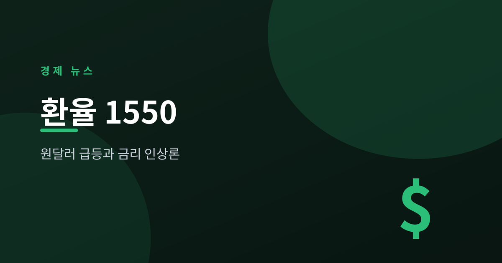
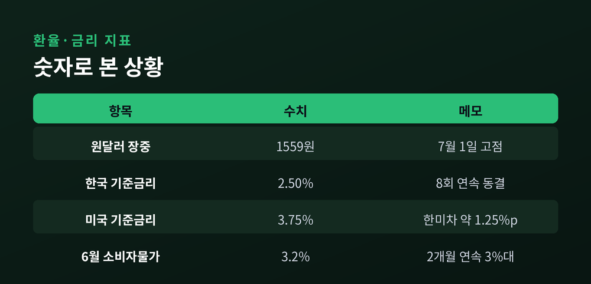
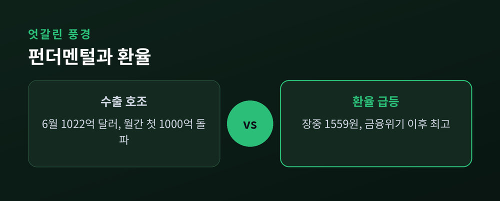
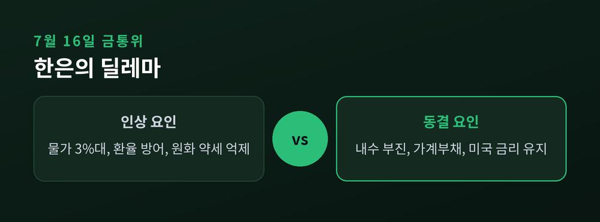

한국은행, 연내 금리 인상 카드를 만지작

이번 글에서는 최근 원·달러 환율이 1550원대로 치솟은 상황을 정리해 보겠습니다. 7월 1일 환율은 장중 1559원까지 올라 글로벌 금융위기 이후 가장 높은 수준을 기록했습니다. 왜 이런 일이 벌어졌는지, 그리고 한국은행이 금리를 올릴 가능성은 어떤지 차분히 짚어 보겠습니다.
7월 1일, 원·달러 환율은 1552.53원으로 문을 열어 장중 1559.47원까지 올랐습니다.
앞서 6월 26일에도 장중 1550원 선을 잠시 넘어섰습니다.
원인은 크게 세 가지가 겹친 결과입니다. 외국인이 국내 주식을 계속 팔아 달러로 바꿔 나가고, 미국 달러는 강세이며, 이웃 일본의 엔화는 약세를 이어가고 있습니다.
외국인이 주식을 팔면 달러 수요가 늘고, 그만큼 환율은 더 밀려 올라갑니다. 이런 악순환이 반복되고 있는 셈입니다.

환율은 단순한 숫자가 아닙니다. 물가와 곧장 연결됩니다.
7월 2일 발표된 6월 소비자물가는 3.2% 올라, 두 달 연속 3%대를 기록했습니다. 2023년 12월 이후 가장 높은 수치입니다. 석유류가 24.7%나 뛴 영향이 컸습니다.
고환율은 수입 물가를 밀어 올려, 이런 물가 부담을 더 키우는 요인이 됩니다.
흥미로운 점은 우리 경제의 기초 체력이 나쁘지 않다는 사실입니다. 6월 수출은 1022억 달러로 월간 사상 처음 1000억 달러를 넘었고, 반도체 수출도 448억 달러로 최대를 기록했습니다.
수출은 역대급인데 환율은 오르는, 다소 엇갈린 풍경입니다. 배경에는 한미 금리차가 있습니다. 한국은 2.5%, 미국은 3.50~3.75%로, 미국 금리가 더 높습니다. 이 격차가 원화 약세를 구조적으로 떠받치고 있습니다.

시선은 7월 16일 한국은행 금융통화위원회로 쏠립니다.
한은 부총재는 "금리 인하를 멈추고 인상을 고민할 때가 됐다"며 인상 사이클 전환 가능성을 언급했습니다. 물가와 환율을 함께 방어하려면 금리를 올리는 카드가 거론될 수밖에 없습니다.
다만 고민은 깊습니다. 미국은 금리를 묶어 두고 일본은 올리는 가운데, 한국만 인상하기엔 내수와 가계부채 부담이 큽니다.
금리만으로 환율을 잡기 어렵다는 신중론도 있습니다. "핵심은 시장의 기대"라는 지적입니다.
※ 이 글은 정보 제공을 위한 해설이며 투자 권유가 아닙니다. 특정 상품이나 매매를 권하지 않습니다.

정리하면 이렇습니다. 수출은 뜨겁지만 환율은 더 뜨겁고, 그 사이에서 한국은행은 어려운 선택을 앞두고 있습니다.
결국 남는 질문은 하나입니다 — "물가를 잡을 것인가, 경기를 지킬 것인가."
7월 16일, 한국은행이 어느 쪽에 무게를 둘지 조용히 지켜볼 때입니다.